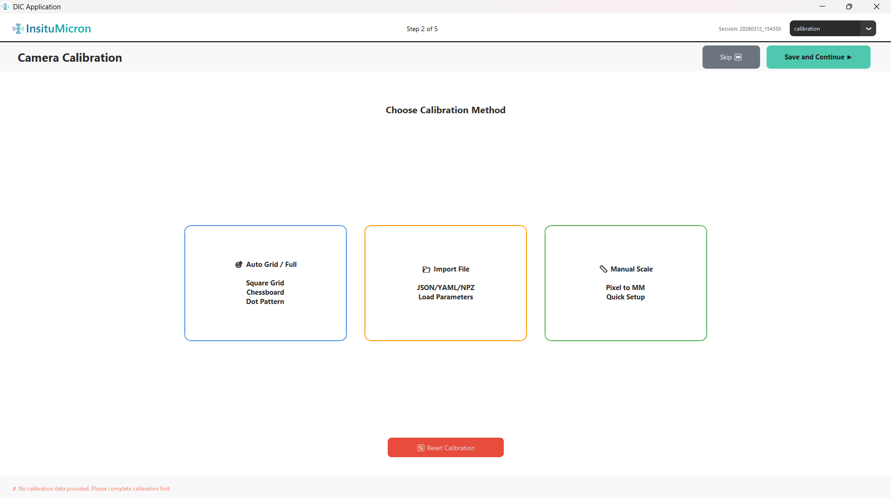
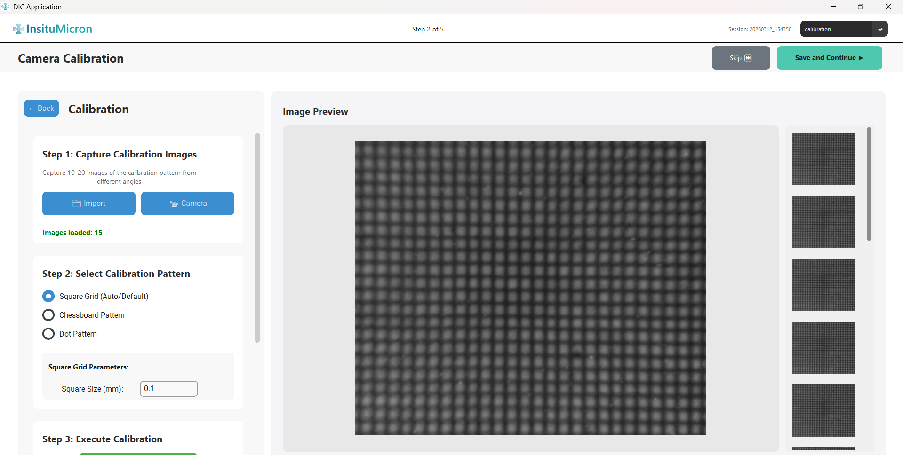
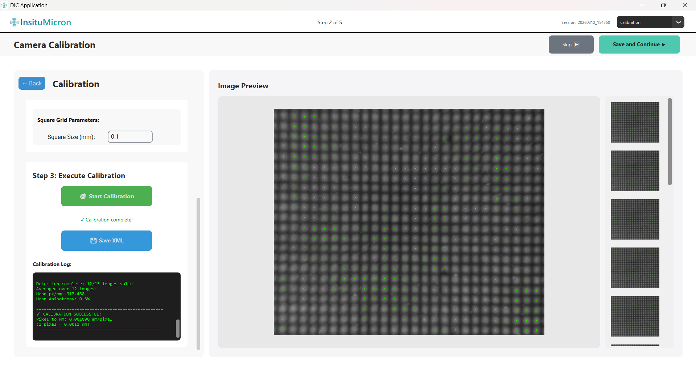
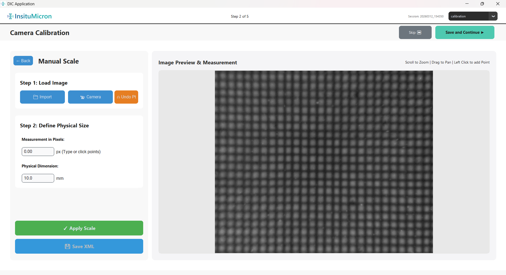
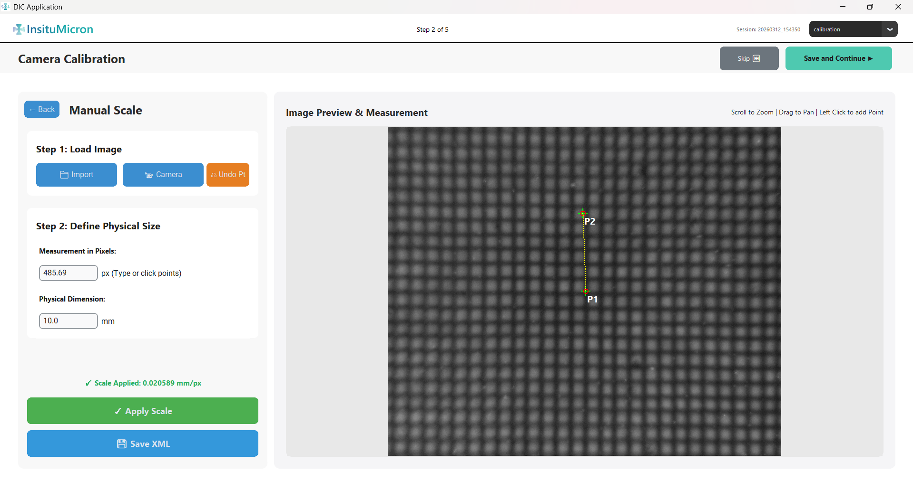

Module 2
Calibration
Converts pixel-based measurements in your images into real physical units (millimeters). Calibration must be completed before DIC displacement and strain results have any physical meaning. Three methods are available — choose based on what equipment you have available.
2.1 Method Selection Screen
When you enter the Calibration module, you see a screen with three method buttons and a reset control at the bottom. Only one method needs to be applied per session.

[Screenshot: Method selection — three buttons]
'">
Figure 2.1 — Calibration method selection screen
Method A
Auto Grid / Full
Recommended when you have a physical calibration target (Square Grid, Chessboard, or Dot Pattern). Performs a full multi-image optical calibration that also computes lens distortion parameters.
Method B
Import File
Use when you already have a saved calibration file from a previous session on this same setup. Supported formats: .json, .yaml, .npz.
Method C
Manual Scale
The quickest option. Use when any object with a known physical dimension is visible in one of your images (e.g., a precision ruler, a reference scale bar). No special target is required.
| Button | Description |
|---|
| Auto Grid / Full (button) | Opens the full two-panel calibration screen. See Section 2.2. |
| Import File (button) | Opens a file browser to select a previously saved calibration file. See Section 2.3. |
| Manual Scale (button) | Opens the two-panel manual calibration screen. See Section 2.4. |
| Reset Calibration (button, bottom) | Clears any calibration data currently stored in the session. Use this if you need to re-calibrate from scratch without closing the application. |
2.2 Sub-Module: Auto Grid / Full Calibration
This method uses multiple images of a physical calibration target to calculate the mm-per-pixel scale factor and, optionally, lens distortion coefficients. This is the most accurate calibration method.

[Screenshot: Full calibration — left panel with Steps 1-3, right thumbnail preview]
'">
Figure 2.2 — Auto Grid calibration — two-panel layout showing Steps 1, 2, and 3
Step 1 — Capture Calibration Images
Calibration requires multiple images of your target captured from varied angles and positions. A minimum of 10 images is required; 15–20 gives best results.
| Control | Description |
|---|
| Import (button) | Opens a file browser. Select 10–20 pre-captured photos of your calibration target at different angles. Multi-select is supported. |
| Camera (button) | Opens an embedded camera capture dialog. Use this to capture calibration images directly from a connected FLIR or USB camera without leaving the module. |
| "Images loaded: X" label | Tracks the running count of loaded images. Text turns green and a checkmark appears when you reach the 10-image minimum required to enable the Start Calibration button. |
| Thumbnail strip (right panel) | Small preview thumbnails automatically appear as each image is added. Click any thumbnail to see a full-size preview. Good calibration images should show the target clearly with the pattern fully in frame. |
You need at least 10 images to proceed. The Start Calibration button will remain disabled until this minimum is reached.
Step 2 — Select Calibration Pattern
Tell the software what type of calibration target you are using and provide its physical dimensions:
| Pattern Type | Required Input Fields | Notes |
|---|
| Square Grid (default) | Physical Square Size (mm) | Used for the InsituMicron square dot-grid targets. Enter the center-to-center spacing of the grid squares in millimeters. |
| Chessboard Pattern | Inner Corners X, Inner Corners Y, Square Size (mm) | Standard OpenCV chessboard. Count inner corners only (not the outer border squares). Inner Corners X × Inner Corners Y gives the expected corner count per image. |
| Dot Pattern (asymmetric) | Dot Columns, Dot Rows, Dot Spacing (mm), Dot Diameter (mm) | For asymmetric circle-grid targets. Spacing refers to the center-to-center dot pitch. |
Step 3 — Execute Calibration
| Control | Description |
|---|
| Start Calibration (green button) | Runs the full calibration algorithm across all loaded images. This may take 5–30 seconds depending on image resolution and count. The button is disabled if fewer than 10 images are loaded. |
| Calibration Log (black text area) | Displays real-time output from the calibration engine in green text. Shows per-image success or failure, reprojection error (RMS), and a final summary. Aim for an RMS reprojection error below 1.0 pixel. |
| Save Calibration (button — visible after success) | Appears after a successful calibration. Click to save the calibration parameters to a file (.json or .npz) you can reload in future sessions using Method B. |

[Screenshot: Calibration log showing CALIBRATION SUCCESSFUL with RMS error value]
'">
Figure 2.3 — Calibration log after a successful run
If the calibration reports a high RMS error (>1.5 px), check that your target images are sharp, the pattern is fully visible in each frame, and the correct pattern dimensions are entered. Remove any images where the target detection clearly failed.
The Back button in the top-left of the screen returns to the method selection screen at any time without losing already-loaded images.
2.3 Sub-Module: Import Calibration File
If you have performed calibration previously on the same optical setup and saved the resulting calibration file, you can load it directly without repeating the entire procedure.
| Action | Description |
|---|
| Clicking Import File | Opens a Windows file browser filtered for calibration file types: .json, .yaml, and .npz. |
| After selecting a file | The file is parsed and the calibration parameters are loaded into the current session. A success message confirms the import. The module is automatically marked as complete. |
Imported calibration files are optical-setup-specific. Only use a file that was calibrated with the same camera, lens, magnification, and working distance. Using a mismatched file will produce incorrect physical measurements.
2.4 Sub-Module: Manual Scale
The Manual Scale method derives the mm-per-pixel ratio from a single reference image containing any object of known physical size. This is the fastest calibration approach and requires only a ruler or scale bar visible in the image.

[Screenshot: Manual Scale — left controls panel, right zoomable canvas]
'">
Figure 2.4 — Manual Scale calibration screen
Left Panel — Steps
| Control | Description |
|---|
| Step 1 label | Instructs you to load or capture a reference image. |
| Import (button) | Opens a file browser to load a single reference image (your specimen with a ruler or scale bar visible). |
| Camera (button) | Opens a camera capture dialog to take the reference image live. |
| Step 2 label | Instructs you to place exactly two points on the canvas spanning a known distance. |
| Undo Pt (orange button) | Removes the most recently placed calibration point from the canvas. Click twice to clear both points and start placement over. |
| Measurement in Pixels (auto-filled) | Once both points are placed, this field auto-calculates the pixel distance between them. Do not edit this value manually. |
| Physical Dimension (mm) input field | Enter the actual real-world distance between the two points you placed (in millimeters). Example: if you placed points across a 5 mm gap on a scale bar, enter 5.0. |
| Apply Scale (green button) | Computes the mm/pixel ratio and saves it to the session. A confirmation appears: "✓ Scale Applied: 0.01234 mm/px". The calibration is now complete. |
| Save XML (blue button — enabled after Apply) | Saves the calibration result to an XML file that can be imported in future sessions. Store this file with your test data for traceability. |
Right Panel — Zoomable Canvas
The right panel displays your reference image in a fully interactive canvas:
| Interaction | Effect |
|---|
| Scroll wheel (up/down) | Zoom in / Zoom out around the cursor position |
| Left-click and drag | Pan the image |
| Left-click (single) while in point-placement mode | Places a calibration point (P1 on first click, P2 on second). Up to 2 points can be placed. |
| Green crosshair marker | Appears at each placed point's location |
| Yellow dashed line | Connects P1 and P2, visually confirming the span you are measuring |

[Screenshot: Canvas showing P1 and P2 crosshairs connected by a yellow dashed line]
'">
Figure 2.5 — Canvas after placing both measurement points. Yellow line spans the known reference distance.
The procedure for Manual Scale calibration:
Load the reference image using Import or Camera.
Zoom in on the scale bar or reference object using the scroll wheel.
Click to place Point 1 (P1) at one end of a known-length feature.
Click to place Point 2 (P2) at the other end. The yellow line and pixel distance appear automatically.
Enter the real-world distance in the Physical Dimension (mm) field.
Click Apply Scale. The mm/px ratio is computed and stored.
Optionally, click Save XML to save for future use.